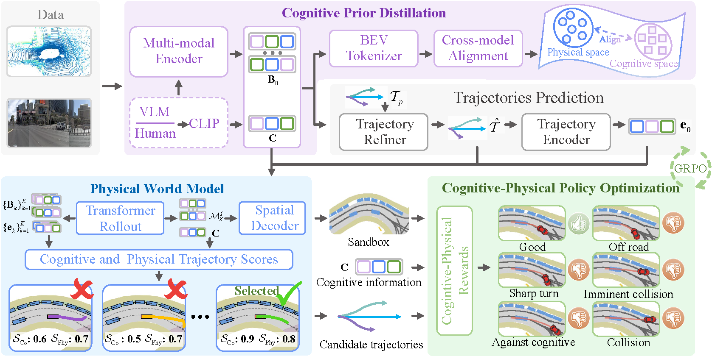
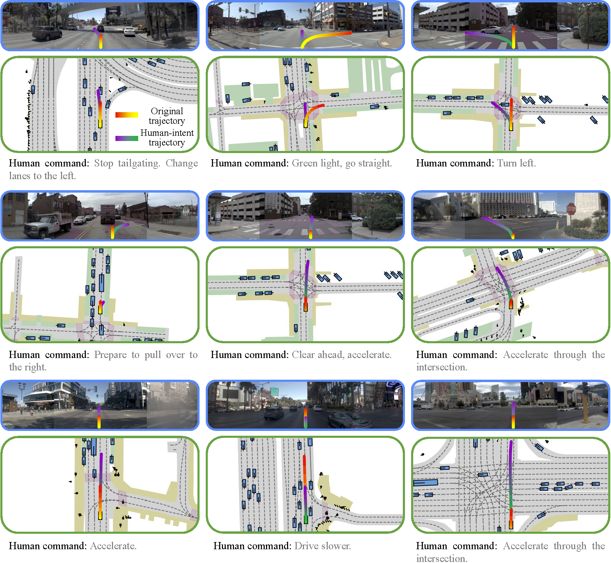

01 / DISTILL
Cognitive prior distillation
Transfer VLM knowledge into the BEV encoder to capture traffic semantics and driving intent without retaining the VLM at inference.
CoPhy
NeurIPS 2026
† Independent researcher. * Corresponding author.
Current end-to-end autonomous driving models are fundamentally constrained by the behavioral cloning ceiling of imitation learning. While reinforcement learning offers a path to smarter autonomy, it demands two missing pieces of infrastructure: (1) a cognitive foundation that understands traffic semantics and driving intent, and (2) a foresighted physical environment that can anticipate the consequences of candidate actions.
To this end, we propose CoPhy, a Cognitive-Physical reinforcement learning framework for autonomous driving. To distill to think, we distill VLM knowledge into the BEV encoder and then discard the VLM entirely, retaining cognitive ability at zero inference cost while releasing the cognitive channel as a pluggable interface for optional human language commands. To foresee to act, we build an auto-regressive BEV world model that explicitly predicts future semantic maps conditioned on candidate actions, serving as an interpretable physical sandbox from which safety metrics are directly derived.
Built upon this dual infrastructure, we optimize the driving policy via GRPO with a novel dual-reward mechanism: a physical reward derived from BEV rollouts enforces hard safety constraints, while a cognitive reward from a language-aligned scorer ensures intent compliance. Extensive experiments demonstrate that CoPhy not only achieves state-of-the-art results on NAVSIM v1 and v2 benchmarks, but also enables safer driving via cognitively informed scene compliance and flexible intent control through user-defined language instructions.
Cognitive priors, predictive physical reasoning, and dual-reward policy optimization in one driving framework.

01 / DISTILL
Transfer VLM knowledge into the BEV encoder to capture traffic semantics and driving intent without retaining the VLM at inference.
02 / FORESEE
Roll out future semantic BEV maps conditioned on candidate actions, making their predicted physical consequences explicit.
03 / OPTIMIZE
Optimize the driving policy with GRPO, combining physical safety rewards with cognitive intent-alignment rewards.
Explore CoPhy's driving visualizations across diverse road conditions. Select a video to play; starting another pauses the previous clip.
These driving visualizations showcase turning, lane keeping, and car following in varied environments, including rainy weather, construction zones, winding roads, busy intersections, and congested traffic with limited visibility. Red trajectories represent model predictions, while green trajectories represent the ground truth (GT).
These examples illustrate driving informed by scene semantics, including traffic signals, intersection layouts, sidewalks, bicycle lanes, and speed limits. CoPhy combines cognitive scene understanding with physical reasoning to guide driving behavior in context.
Human language commands allow CoPhy to adapt its planned driving trajectories to different driving intents.

@article{wu2026distill,
title={Distill to Think, Foresee to Act: Cognitive-Physical Reinforcement Learning for Autonomous Driving},
author={Wu, Yang and Meng, Qiang and Liu, Zhaojiang and Liu, Youquan and Yang, Jian and Xie, Jin},
journal={arXiv preprint arXiv:2605.21139},
year={2026}
}